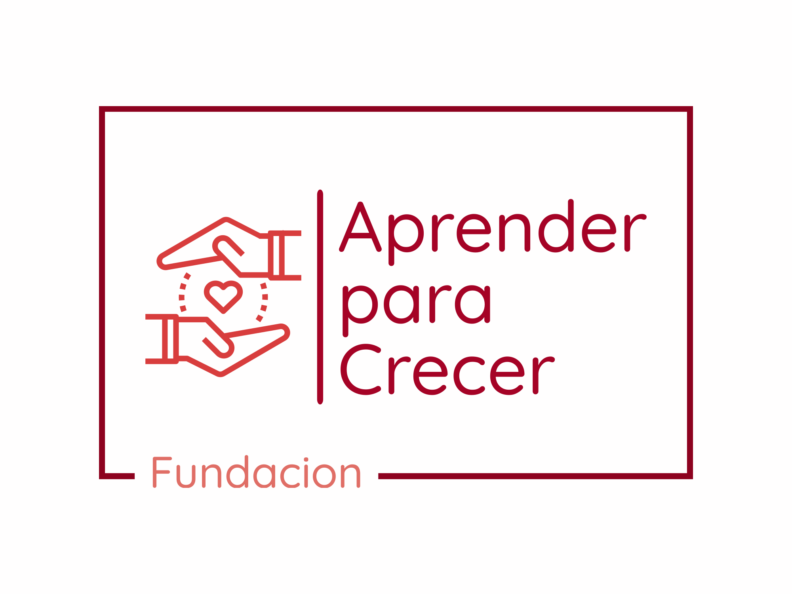
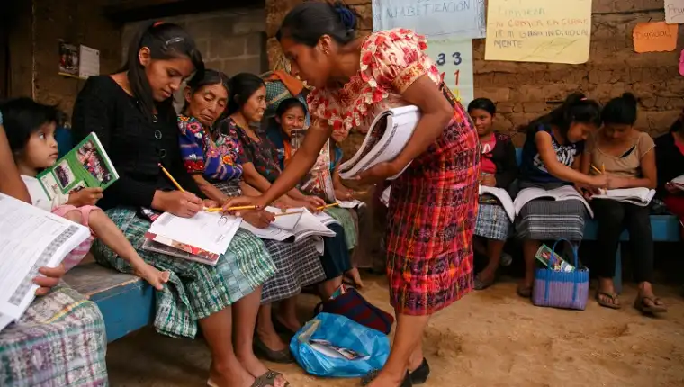
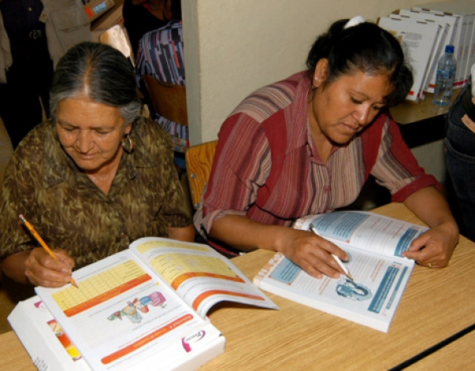

La Fundación, de nombre "Aprender Para Crecer", nace con el objetivo principal de ayudar a analfabetos jóvenes, adultos y de la tercera edad, con el aprendizaje progresivo de la lectoescritura.
Desde el 2015, Aprender Para Crecer ha logrado impactar a más de un tercio de la población analfabeta dentro de México. El entendimiento de la lectura y escritura es una base primordial para el reingreso a la sociedad moderna. Con el dominio del mismo, se abren un sinfin de posibilidades para los participantes. Desde una mejor comunicación intrafamiliar hasta la obtensión de un trabajo formal y estable.
Aprender Para Crecer se compromete a siempre priorizar el bienestar de sus miembros. Incentivando constantemente el respeto y la empatía entre los colaboradores. Con la finalidad de que puedan salir al mundo con las herramientas adecuadas para seguir creciendo.



Brindar una educación completa del idioma español, cubriendo los aspectos: Oral y Gramatical. Además de tener como propósito social, mejorar las técnicas de enseñanza de lectoescritura y aportar al crecimiento de las sociedades hispanas y latinas, através de una mejor comunicación social.
Ser la institución líder en enseñanza para la comunidad analfabeta en México. Buscando ser reconocida en la sociedad por nuestro nivel y calidad. Demostrando diaramente nuestro compromiso por mejorar continuamente en la excelencia académica y de servicio.
Creciendo siempre, hacia adelante.
Escrito por: Miembros Fundadores de Aprender para Crecer.
Noviembre, 2023.